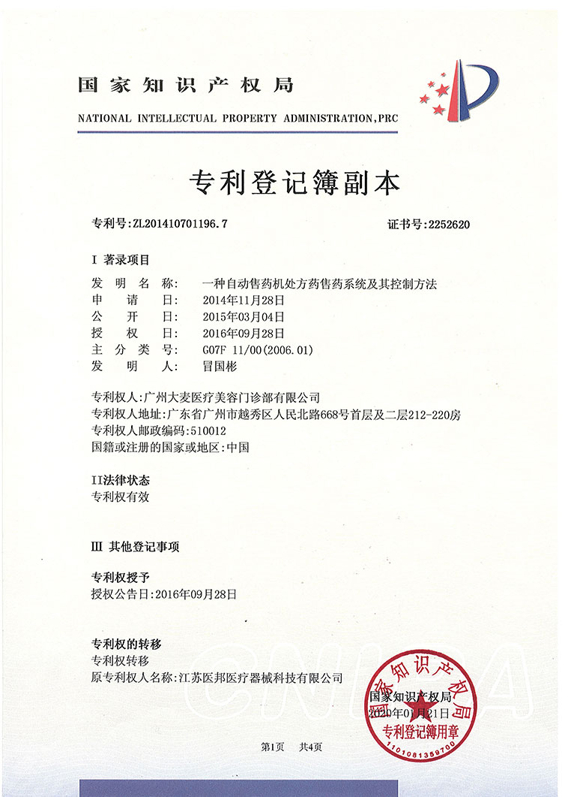

Our revolutionary patented technology
Microneedle hair transplant, also known as implant pen technology, works by placing individual hair follicles into the hollow tip of the implant pen, then directly pushing the follicle into the pre-designed recipient area of the scalp. The pen can be rotated 360° to match natural hair growth direction, significantly reducing trauma and patient pain while avoiding secondary follicle damage.
0.6-1.0mm - 1/3 smaller
Fast recovery
Quick return to normal
20-30% higher
Natural direction
Comprehensive solutions for every need
Follicular Unit Extraction (FUE) is a minimally invasive hair transplant technique that individually extracts hair follicles from the donor area using specialized tools. Our advanced FUE with microneedle implantation ensures precision placement and natural-looking results with minimal scarring.
Follicular Unit Transplantation (FUT) involves removing a strip of tissue from the donor area, then dissecting it into individual follicular units for transplantation. While still effective, our FUT procedures incorporate modern techniques for better healing and results.
Our innovative no-shave technique allows you to undergo hair transplantation without shaving your head. This discreet option is perfect for those who want to maintain their appearance throughout the treatment process.
See how our technologies compare
14 patents representing years of innovation and research

Innovative device for precision hair follicle placement with 360° rotation capability.

Intelligent follicle distribution mechanism for optimal hair density and growth.

Atraumatic follicle extraction device with scalp stabilization technology.

Specialized tool for safe and effective facial hair follicle extraction.

Precision engineered forceps designed for delicate follicle handling.

Precision depth adjustment system for consistent implantation results.

Advanced protective design to prevent secondary follicle damage during transplant.

Ultra-sharp blade for minimal trauma incisions and faster recovery.

Atraumatic extraction technology that preserves follicle viability.

Optimal follicle storage solution maintaining maximum viability.

Precision follicle separation without damage to surrounding tissue.

Angular placement system matching natural hair growth patterns.

Intelligent spacing algorithm for maximum density and natural appearance.

Comprehensive post-transplant care technology optimizing healing and growth.
Your complete 9-step journey to natural hair restoration
Professional scalp health assessment and hair loss grading. We evaluate your donor area follicle resources in the back of your head to determine your candidacy for hair transplantation.
Personalized hairline design considering your facial features and proportions. We hand-draw your hairline, plan the implantation zones, and calculate the exact number of follicles needed.
Complete health screening including blood tests and coagulation assessment. We rule out any contraindications to ensure your procedure is safe and medically sound.
Comfortable local anesthesia administration to both extraction and implantation areas. You'll remain awake and comfortable throughout the entire procedure with no pain.
Precision, scarless extraction of complete follicular units from the healthy donor area at the back of your head using specialized medical instruments.
Medical staff carefully clean and sort high-quality follicles. Follicles are stored in temperature-controlled solution to maintain maximum viability.
Meticulous implantation of healthy follicles one by one using our patented microneedle pen. This precise technique ensures the highest possible survival rate.
Gentle cleaning of the scalp and application of sterile, non-restrictive dressings. We protect the implantation sites while minimizing friction and discomfort.
Comprehensive guidance on post-op hair washing, daily routine, and dietary restrictions. We provide clear recovery guidelines and schedule your follow-up appointments.
See the amazing transformations our patients have achieved


Moments captured with our satisfied patients

Posing with our medical team after successful procedure

Celebrating fantastic results with our doctors

Another satisfied patient shares their joy

Patient with our specialist before discharge

Happy patient with Dr. Chen post-treatment

Excited patient showing their new look

Patient delighted with their transformation

Patient starting fresh with amazing results
Hear from our satisfied patients around the world
"The 0.6-1.0mm incisions made the recovery so much faster! I was back at work in just 2 days. The microneedle technology is truly revolutionary compared to older methods!"
"The 360-degree rotation of the implant pen gave my hair perfect natural direction. My friends can't believe how authentic it looks. This is the future of hair restoration!"
"I washed my hair the day after the procedure! The minimal trauma from the microneedle technique made this possible. No more waiting weeks to get back to normal life!"
"The 20-30% higher density I got is amazing! The patented microneedle implant pen made this possible. My hair looks fuller than I ever dreamed possible!"
"I've heard horror stories about scarring from hair transplants, but our hospital's microneedle technology left no linear scar at all! I can wear my hair short with confidence now."
"The second-generation and third-generation microneedle technology is cutting-edge. I researched for months on Google before choosing our hospital, and their technology is unmatched!"
Experience our modern and comfortable facilities

Relax in our premium lounge

Sterile and advanced

Private and professional

Comfortable post-op space

Welcoming entrance

Our state-of-the-art facility
Learn more about our advanced hair transplant technologies
Click to copy contact information
15810155700
+86 13730143529
hairtransplant@qq.com